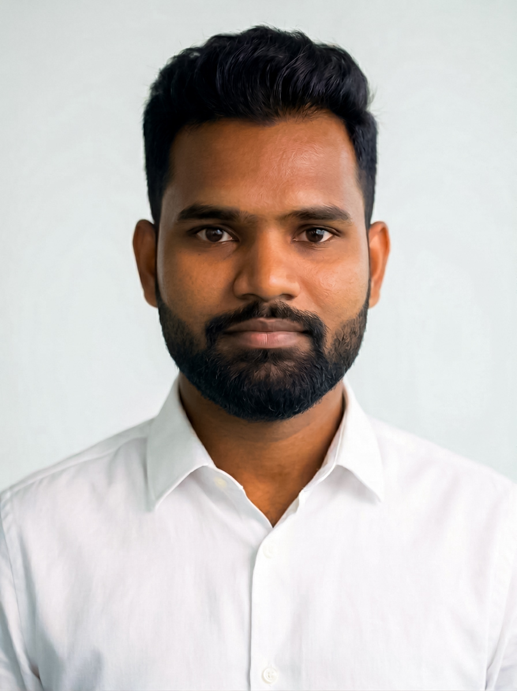

Uday Kiran Kandala
Hi, I'm Uday, a Mechanical & Mechatronics Engineer with over four years of R&D experience developing high-reliability antenna systems, electromechanical products, and automation systems, taking them from concept through design, analysis, prototyping, testing, validation, and production. I work across CAD/CAE, structural and thermal simulation (ANSYS, COMSOL), sensors, actuators, control systems, GD&T, tolerance analysis, and DFMEA/DFM/DFA/DFQ methodologies throughout NPI/NPD programmes, and I've delivered commercial products for global telecommunications customers.
I enjoy working across cross-functional teams, including mechanical, automation, RF, electronics, manufacturing, quality, and supply chain, to solve real engineering problems and deliver products that hold up in the field. I'm currently pursuing an MSc in Machine Learning & AI at Queen Mary University of London, and I'm keen to bring this combined mechanical and mechatronics background to the design and development of high-reliability systems and products.
Track Record
- Delivered antenna systems across beamforming, lens, and macro antenna platforms for US, EU, and Australian markets
- Patented a reconfigurable CBRS lens antenna, JMA Wireless (WO/2025/049288)
- Designed special purpose machinery (SPMs) for process automation
Patents
- Reconfigurable Flat Dielectric Stack Lens for Azimuth Beamwidth Tuning, JMA Wireless, USA (Published), WO/2025/049288, 2025
- Integration of a UV-C Disinfection System with Blending Chamber for Inspiratory and Expiratory Air Cycles of a Medical Ventilator Unit, VIT Vellore, India (Under Scrutiny), 2022
Publications
- Raster Domain Text Steganography, A Unified Glyph Level Framework for Multimodal Secure Embedding, poster, DFRWS EU 2026, Linkoping, Sweden
- Embedding Textual Information in Images Using Quinary Pixel Combinations, arXiv
- Raster Domain Text Steganography, A Unified Framework for Multimodal Secure Embedding, arXiv
- Advantages of the Taguchi Method Compared to Response Surface Methodology for Achieving the Best Surface Finish for WEDM Components, Journal of Mechanical Engineering, 2022
- Significance of Taguchi Design Compared to Response Surface Methodology in Predicting Optimal Machining Conditions for the PCM Process, IOP Conference Series, 2021
- Mini Review on Magnetic Lead Screw Technologies, Advances in Robotics & Mechanical Engineering, 2021
- Analysis of Forces Generated in Human Body Segments for Real-Time Space Flight, IOP Conference Series, 2021
Achievements and Awards
- Cash Award, Patent on "CBRS Lens Antenna," JMA Wireless, 2025
- Fully Funded PhD Offer, Materials Science (Nuclear Energy), University of Birmingham and Tokamak Energy, 2024 and 2025
- Global Talent Scholarship, MSc in Machine Learning & AI, Queen Mary University of London, 2025
- Special Achiever, VIT Vellore, India, 2021
- Achiever, VIT Vellore, India, 2021
- 2nd Runner Up, International Design Hackathon, University of Queensland, 2020
- Finalist, "HACK THE CRISIS" Hackathon (MHRD, AICTE, India), 2020
- Best Research Paper Award, ICSET '19, VIT Vellore, 2019
- Certificate of Merit, National Interactive Math Olympiad, 2010
- Certificate of Merit, National Interactive Math Olympiad, 2009
- NCC 'A' Certification, National Cadet Corps, Ministry of Defence, India, 2009 to 2011
My Journey
My journey began during my Bachelor's in Mechanical Engineering, when I started to appreciate how deeply engineering is embedded in the world around us. Over four years, I explored everything from foundry and manufacturing to engines, heat transfer to hydraulic machines, robots to rockets, but what stayed with me was the realisation of how much science, precision and engineering goes into making the systems we rely on every day.
That feeling became much stronger during my final-year project, where I designed and built a ball transfer table. While working on the mechanical system, I started thinking beyond the mechanism itself, what if I could automate it, how could it sense, decide and act. That project brought out what I now think of as my inner engineer and made me realise that my interests extended beyond mechanical engineering into mechatronics, automation and intelligent systems.
That led me to VIT Vellore for an M.Tech in Mechatronics Engineering. From the beginning, I actively looked beyond the curriculum, attending workshops and conferences and taking additional courses to explore new technologies. I worked across robotics, automation, computer vision and machine learning, receiving recognition including a Best Paper Award at a VIT conference for my computer-vision work and international hackathon awards through University of Queensland. My projects ranged from developing a shape-memory-alloy actuator for a flapping-wing micro aerial vehicle (MAV) and contributing to ventilator design during the pandemic, to developing payload deployment systems for UAVs. These experiences increasingly drew me toward the intersection of mechanical systems, intelligent control and autonomous machines, and eventually shaped my interest in space, defence and robotics research.
During my second year at VIT, I joined DRDO for an R&D project, working on an electro-permanent magnetic locking and release mechanism for UAV applications. At the same time, I began seriously pursuing research opportunities and PhD programmes. I was shortlisted by IIT Bombay for Energy Science, but my ambition at the time was to experience research internationally. I eventually received my first PhD admission in Aerospace Engineering at the University of Arizona. However, the PhD did not come with the funding I needed, and the research groups I approached did not have suitable funded positions available, so I could not take the opportunity forward.
While continuing to pursue research, I also began building experience across industry. I received opportunities spanning warehouse automation, agricultural automation, industrial automation, machine learning, telecommunications and robotics, eventually joining JMA Wireless.
At JMA Wireless, I spent nearly two years in R&D developing macro antenna products, working across multiple product-development programmes from concept and mechanical design through simulation, prototyping, validation, NPI and production. The role gave me deep exposure to taking complex RF products from engineering concepts into manufacturable, production-ready systems. One of the projects I worked on also resulted in patent work involving reconfigurable antenna technology. During this period, I also secured my first sponsored job opportunity in Germany, but with PhD admissions already in hand, I chose not to pursue it as I was committed to continuing toward a PhD.
At the same time, I continued applying for PhD positions. I received opportunities in Robotics and Autonomous Systems at Arizona State University and later for a major nuclear-energy research programme involving the University of Birmingham and Tokamak Energy, developed in collaboration with leading research institutions across the UK, USA, France and Germany, including the University of Michigan, University of Tennessee, Oak Ridge National Laboratory (ORNL) and CNRS. I also pursued further research opportunities with organisations including CNRS and Forschungszentrum Jülich. But once again, circumstances outside the technical work shaped the outcome, funding limitations, supervisory changes and ultimately ATAS and visa-related delays prevented several of these paths from materialising.
During this period, I also explored entrepreneurship, founding and running a higher-education consultancy. I eventually closed the company as I decided to prioritise my long-term pursuit of higher education and research. In parallel, I was selected for a team-lead/managerial position at a defence startup, offering another strong direction for my career. However, I chose not to pursue it, as I had already committed myself to pursuing a PhD in space and robotics research.
Eventually, after years of pursuing research opportunities and repeatedly encountering funding, supervisory and visa-related barriers, I joined Queen Mary University of London for an MSc in Machine Learning & AI, initially with the intention of continuing toward a PhD.
When I came to QMUL, I continued pursuing the same goal I had carried for years. From the beginning, I contacted professors and research groups directly, sending emails, reaching out through LinkedIn, having direct conversations and exploring funded PhD opportunities. But after repeated discussions and applications, I encountered the same fundamental barrier, limited funding opportunities for international students.
This time, however, I looked at my journey differently. After years of actively pursuing a PhD through applications, emails, direct conversations with professors and research groups, LinkedIn outreach, interviews and countless attempts to secure a funded position, I realised that I had already spent years doing what I wanted to do, pursuing research.
Research was never something I was waiting to begin after a PhD. Throughout my journey, from my Bachelor's onward, I had already pursued research-oriented projects, published papers, developed patented technologies and continuously explored questions beyond the requirements of my formal education.
So I made a decision, I would stop treating a conventional PhD as a prerequisite for research and build my own research path instead.
That decision led to my current research programme, beginning with work on Glyph Perturbation Cardinality (GPC) and steganography. GPC was not the beginning of my research journey. It was the beginning of a new chapter in which I was no longer waiting for a PhD position or institution to determine what I could investigate. What started as one research question grew into a series of connected questions, experiments and papers, eventually developing into a multi-paper research programme, alongside related work such as QPC.
Looking back, my path has taken me through Mechanical Engineering, Mechatronics, Robotics, Computer Vision, Automation, Telecommunications, Entrepreneurship and Machine Learning.
It hasn't been linear. I've had opportunities I couldn't take, research paths that disappeared, projects that changed direction and decisions that required me to start again.
But the underlying motivation has remained the same. I want to understand how things work, build them, and push them further.
Today, I no longer see a degree, job title or institutional position as the boundary of what I can explore. I am building my own path at the intersection of engineering, intelligent systems and research.